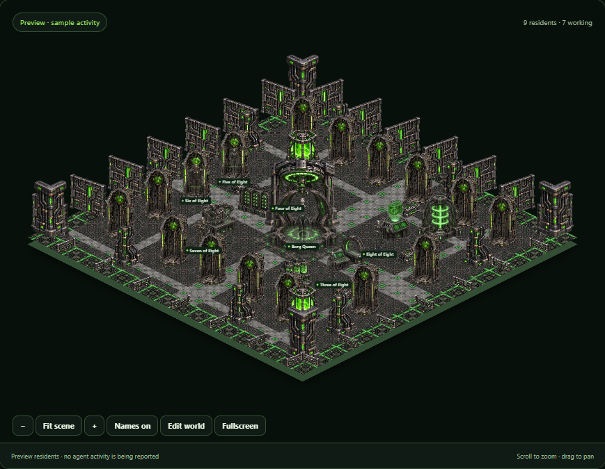

Borg Cube
A Borg cube built around its Queen. Eight distinct drones work the collective systems, back into regeneration alcoves when inactive, and recharge under animated green lights. Requires Agent Watch 0.4.0 or later.
v1.0.0 · 17.9 MiB · Optional download